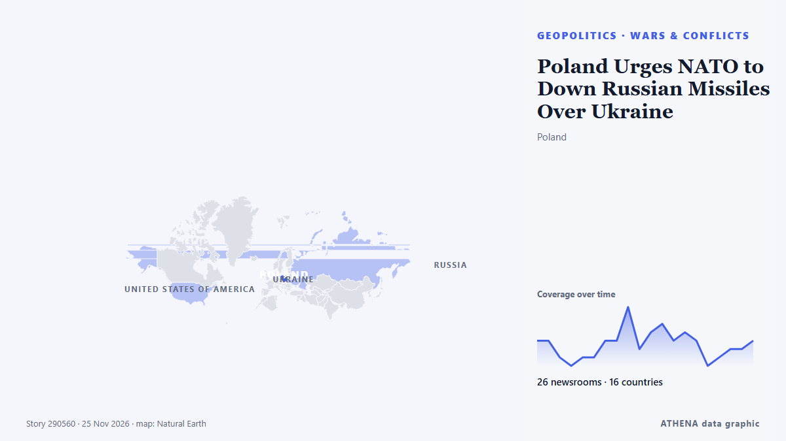

Poland Urges NATO to Down Russian Missiles Over Ukraine

Poland has asked NATO allies to consider intercepting Russian missiles over Ukraine if they are heading toward alliance territory, Bloomberg reported. from Kyiv Post
What changed 10 new reports from 10 outlets in the last 24 hours.
See the sources ›Evidence: Fair
Reported independently by 28 outlets in 17 countries since 20 Nov, first by Expats.cz; coverage is fading. ATHENA rates the risk elevated (4.9/10), driven mainly by the severity of the harm described and its geographic and sector reach. Confidence is 91% (high), with 28 independent outlets corroborating it and an average source reliability of 77%. Outlets by country: Ukraine (18), United States (6), Czech Republic (2). Coverage: 20 Nov to 25 Nov, 116 hours.
Why it matters: Russia's full-scale invasion of Ukraine began in February 2022. This tracker follows the fighting, strikes on infrastructure and the diplomacy around the war, as covered by outlets around the world.
What changed: 10 new reports from 10 outlets in the 24 hours to 25 Nov.
First reported as: ‘A matter of time’: Pavel warns Czechia could face an incident like Poland’s
AutomatedSelected, grouped and scored by ATHENA's published method from 23 independent outlets. The headline is the outlet's own; ATHENA's sentences follow fixed patterns - no generative AI writes them. How it works →
How to read this page
- What you are reading
- 28 outlets in 17 countries reported this event. The reports below are listed in the order they appeared; each headline opens the original article. ATHENA writes none of the reports.
- Our reading
- Under watch — The reports describe action, or a decision still to be taken, between states or armed groups. ATHENA follows what happens next. We look for four kinds of development: nothing further, an open action that someone claims, an action through others or without a claim, and an accident or misreading. We do not predict which will happen.
- How much evidence
- Fair Several independent outlets agree, but the picture could still change.
After repeats, off-topic items and stale reports are removed, 19 of the 40 listed reports are counted; 95% of the headlines match the event.
- What this does not mean
- ATHENA measures how an event is reported, not whether it is true. This is not a forecast, a judgement on who is right, or advice.
- What would change it
- Reports from other independent outlets showing a different development, or a firm confirmation or denial from an official source.
Reading R2 · refreshed with every update of this page. ATHENA has not yet published a track record for these readings; when it does, it will be linked here.
At a glance
Selected, scored and written by ATHENA's published methodology. No editor intervenes in individual events. How this is produced ›
| 20 Nov 18:11 UTC | 3 |
|---|---|
| 21 Nov 00:11 UTC | 3 |
| 21 Nov 06:11 UTC | 1 |
| 21 Nov 12:11 UTC | 0 |
| 21 Nov 18:11 UTC | 1 |
| 22 Nov 00:11 UTC | 1 |
| 22 Nov 06:11 UTC | 3 |
| 22 Nov 12:11 UTC | 3 |
| 22 Nov 18:11 UTC | 7 |
| 23 Nov 00:11 UTC | 2 |
| 23 Nov 06:11 UTC | 4 |
| 23 Nov 12:11 UTC | 5 |
| 23 Nov 18:11 UTC | 3 |
| 24 Nov 00:11 UTC | 4 |
| 24 Nov 06:11 UTC | 3 |
| 24 Nov 12:11 UTC | 0 |
| 24 Nov 18:11 UTC | 1 |
| 25 Nov 00:11 UTC | 2 |
| 25 Nov 06:11 UTC | 2 |
| 25 Nov 12:11 UTC | 5 |
| 22 Nov 19:10 UTC | 4.3 |
|---|---|
| 22 Nov 19:24 UTC | 5.1 |
| 23 Nov 00:58 UTC | 5.0 |
| 23 Nov 01:57 UTC | 5.5 |
| 23 Nov 04:46 UTC | 5.0 |
| 25 Nov 15:25 UTC | 4.9 |
Why these numbers
Importance
How widely and how prominently the story is reported.
Risk
What the reports describe, scored for possible harm. It is not a forecast.
Confidence
How well independent outlets support the story.
The reporting — who reported it, and when
headline as published · opens the original- Expats.cz · Czech Republic‘A matter of time’: Pavel warns Czechia could face an incident like Poland’s
- Notes from Poland · PolandFedEx-led consortium completes €7.8bn takeover of Polish delivery giant InPost
- The Hill · United StatesExclusive: Shaheen, Coons call for ‘swift’ response to Russian incursions into allied airspace
- PYMNTS · United StatesPayPo Taps Citigroup and JPMorgan for Possible Warsaw IPO
- The Hill · United StatesDem senators want ‘swift’ response to Russian airspace incursions
- Expats.cz · Czech RepublicCzechia offers Poland help after missiles and drone crash on its territory
- Kyiv Post · UkraineRussian Ice Dancers Withdraw From Warsaw Cup After Polish Ministry Opposition
- Kyiv Independent · UkraineSwedish Gripen pilot unable to shoot down suspected Russian missile over Poland due to poor weather, commander says
- Ukrinform (English) · UkraineUkrainian border guards down new Russian Filin missile for first time in Chernihiv region
- Kyiv Post · UkraineNATO to ‘Support’ Poland Boosting Border Security After Incursions, Minister Says
- Kyiv Post · UkraineNATO Will Defend ‘Every Inch’ of Poland, Rutte Says Ahead of Monday Council Talks
- Kyiv Post · UkraineRussian Kh-101 Missile That Crashed in Poland Was Built in Late 2026
- Kyiv Post · UkraineJet-Powered Drone Violates Moldova’s Airspace Twice During Russian Attack on Ukraine
- Ukrainska Pravda (English) · UkrainePoland flags Russian disinformation over alleged Ukrainian attack in Kaliningrad Oblast
- The Straits Times · SingaporeThree Russian missiles flew into Poland Friday, prosecutors say
- ABC News (International) · United StatesPoland says Russia twice tried to kill a Ukrainian American rapper
- Anadolu Agency (English) · TurkeyOver half of migrants surveyed in Poland report abuse, study finds
- Ukrainska Pravda (English) · UkraineThree Russian missiles violated Polish airspace on 20 November
- Arab News · Saudi ArabiaPoland says Russia allegedly twice tried to kill a Ukrainian American rapper
- NPR World · United StatesUkraine war spilling into NATO territory
- Kyiv Independent · UkrainePolish authorities find Russian missile remains at three sites following airspace incursion
- BNO News · United StatesPoland identifies Russian-made cruise missile debris at 3 sites
- FBC News · FijiThree Russian missiles flew into Poland Friday
- ProtoThema English ·All three missiles that violated Polish airspace were Russian, NATO to meet today
- Meduza (English) · RussiaAll three ‘flying objects’ that fell in Poland turned out to be Russian X-101 cruise missiles
- Kyiv Post · UkraineNATO to Offer Poland ‘Strong Support’ After Russian Missiles Enter Its Airspace
- Notes from Poland · PolandPoland confirms three objects that struck its territory were all Russian missiles
- To Vima (English) · GreeceNATO Assembly Meets In Berlin As Russian Missiles Crash In Poland
- Euromaidan Press · UkraineRussian missiles that fell in Poland were only weeks old, prosecutors’ preliminary dating shows
- AzerNews · AzerbaijanRutte: Russian missiles in Poland are 'dangerous incident'
- Ukrainska Pravda (English) · UkraineGermany's Merz urges Russia to stop "dangerous provocations" after missiles fall in Poland
- The Straits Times · SingaporeNATO to send early-warning system aircraft to Poland after missiles incident
- Cyprus Mail · CyprusNato to send early-warning system aircraft to Poland after missiles incident
- Daily Maverick · South AfricaNATO to send early-warning system aircraft to Poland after missiles incident
- Ukrainska Pravda (English) · UkraineRussian drone enters Poland during attack on Ukraine but is not shot down
- Kyiv Independent · UkraineRussian drone violates Polish airspace deliberately, Polish defense ministry says, days after missile incursion
- Kyiv Post · UkraineRussian Drone Violates Polish Airspace in ‘Another Provocation,’ Warsaw Says
- The Korea Times · South KoreaNATO to send early-warning system aircraft to Poland after missiles incident
- Ukrinform (English) · UkraineRussian drone enters Polish airspace during attack on Ukraine
- Kyiv Post · UkrainePoland Urges NATO to Down Russian Missiles Over Ukraine